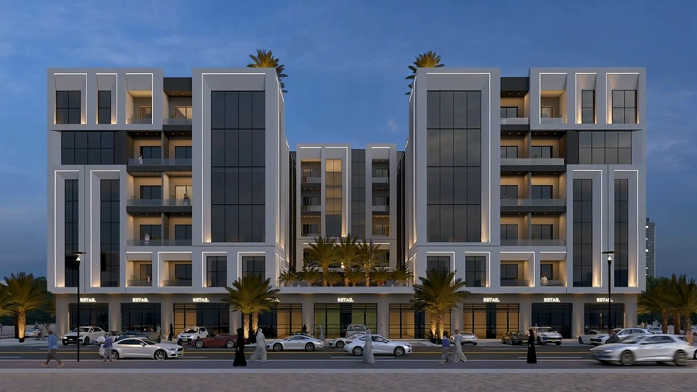

01
دراسات الجدوى
تقييم الجدوى الفنية والتجارية قبل الاستثمار، لاتخاذ قرارات مبنية على بيانات موثوقة.

من نحن
ميرديان للاستشارات الهندسية شركة متعددة التخصصات مسجلة في سلطنة عُمان. وتتعاون عند الحاجة مع شركات متخصصة من أوروبا والولايات المتحدة وآسيا وأفريقيا لتقديم خدمات مهنية متميزة.
الخدمات
تقييم الجدوى الفنية والتجارية قبل الاستثمار، لاتخاذ قرارات مبنية على بيانات موثوقة.
تصاميم متكاملة ومنسّقة بين التخصصات، جاهزة للتنفيذ مع وثائق طرح العطاءات.
مهندسون مقيمون في الموقع لمتابعة الجودة والسلامة والجدول الزمني والتنسيق مع المقاولين حتى التسليم.
مخططات متكاملة تجمع استعمالات الأراضي والحركة والبنية الأساسية واحتياجات المجتمع ضمن تصورات قابلة للتنفيذ.
تصميم معماري يراعي طبيعة الموقع، من الأفكار الأولية إلى المخططات التفصيلية الجاهزة للتنفيذ.
إدارة الوقت والتكلفة ونطاق العمل والمخاطر في جميع مراحل المشروع، من تحديد المتطلبات إلى الإغلاق.
تحليل تأثير المشروع على شبكة الطرق المحيطة، واقتراح حلول عملية للحد من الآثار المرورية.
تدقيق مستقل لمشاريع الطرق في مراحل التصميم وبعد التنفيذ، يراعي سلامة جميع مستخدمي الطريق.
أعمال مختارة
من دراسة الجدوى إلى التسليم النهائي، تواصل مع فريق يعمل عبر عشرة تخصصات هندسية.